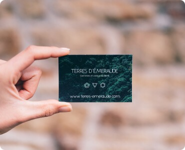
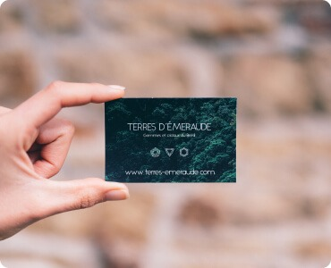
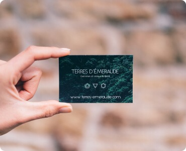

Контентні зображення - зображення, які і є контентом сайту У більшості випадків це растрові зображення (фотографії) (JPG/PNG -> WEBP) Усі контентні зображення виводяться тегом IMG

 



Контентні зображення - зображення, які і є контентом сайту У більшості випадків це растрові зображення (фотографії) (JPG/PNG -> WEBP) Усі контентні зображення виводяться тегом IMG

Іконки - невеликі прості зображення, які підсилюють ефект тексту, або самостійно несуть певну інформацію У більшості випадків це векторні зображення. (SVG) Іконки можуть інтегруватись як тегом IMG так і через CSS (background та інші)
Елементи дизайну - веркторні, або растрові зображення (можливо з прозорістю) які є частиною дизайну сайту. Можуть бути як векторні так і растрові (SVG, JPG/PNG -> WEBP) Елементи дизайну, частіше всього, інтегруються через CSS (background та інші)